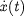
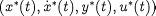
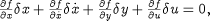
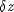
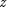
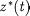
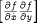

gPROMS models typically comprise mixed sets of non-linear
differential and algebraic equations. These can be written in the
form1Models of distributed processes described by mixed,
integro-partial differential and algebraic equations (IPDAEs) are
automatically converted to the above form by the gPROMS
discretisation techniques.
Here x(t) and y(t) are the sets of differential and algebraic variables respectively (both of which are unknowns to be determined by the gPROMS simulation) while  are the derivatives of x(t) with respect to time, t. On the other hand, u is the set of input variables that are given functions of time2It should be noted that, in gPROMS, the membership of the sets x(t), y(t), u(t) may change during the course of the simulation (e.g. via Replace tasks). The analysis presented in this document applies at a particular point during the simulation at which the linearised model is constructed from the nonlinear one.Now consider a point  on the simulation trajectory that satisfies

By linearising the above equations at this point, we can obtain a linear model of the form:

where  denotes the deviation of the variable  from the reference trajectory  and all the partial derivatives are evaluated on the reference trajectory.
For most DAE systems of index 1, the matrix  is non-singular, and consequently the above system can be re-arranged to the form:

which is a linearised form of the original non-linear system